Input values: 1=full, 0.5=half, 0=empty. Greedy is the vertical-only column-wise baseline. A timeout is not evidence that no solution exists.
Report · All comparisons (CSV) · Settings (JSON)
| Algorithm | Status | Cost | Optimality gap | Actions | Side actions | Expanded | Time (s) | Python KiB | Animation |
|---|---|---|---|---|---|---|---|---|---|
| GREEDY | found | 47 | 13 | 7 | 0 | 7 | 0.0015 | 1.1 | View |
| DFS | found | 47 | 13 | 7 | 0 | 7 | 0.0203 | 12.7 | View |
| BFS | found | 47 | 13 | 7 | 0 | 2473 | 2.7680 | 620.5 | View |
| IDS | timeout | — | — | — | — | 5559 | 5.0003 | 5.7 | — |
| UCS | found | 34 | 0 | 10 | 3 | 5661 | 4.3799 | 1320.7 | View |
| ASTAR | found | 34 | 0 | 10 | 3 | 5326 | 4.8582 | 1264.6 | View |
| RBFS | timeout | — | — | — | — | 4864 | 5.0002 | 7.2 | — |
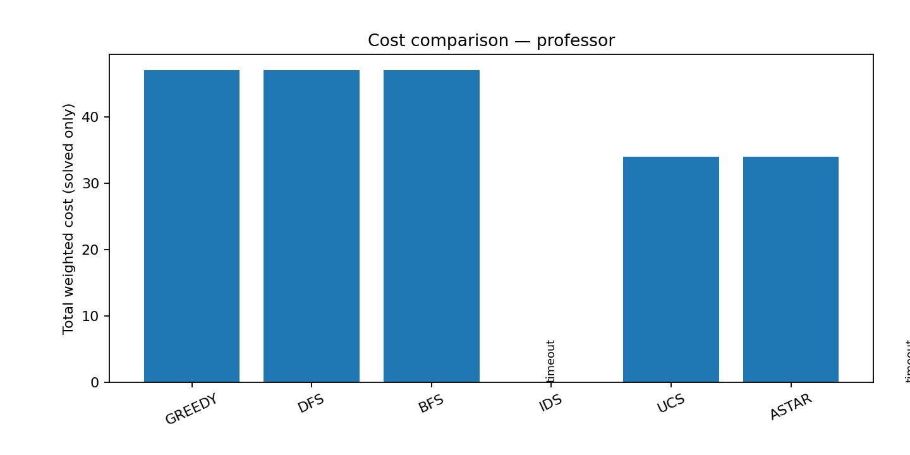
| Algorithm | Status | Cost | Optimality gap | Actions | Side actions | Expanded | Time (s) | Python KiB | Animation |
|---|---|---|---|---|---|---|---|---|---|
| GREEDY | found | 38 | 4 | 8 | 0 | 8 | 0.0023 | 1.1 | View |
| DFS | found | 38 | 4 | 8 | 0 | 8 | 0.0104 | 11.4 | View |
| BFS | found | 38 | 4 | 8 | 0 | 530 | 0.4821 | 77.9 | View |
| IDS | timeout | — | — | — | — | 4895 | 5.0002 | 7.0 | — |
| UCS | found | 34 | 0 | 8 | 0 | 644 | 0.3999 | 63.0 | View |
| ASTAR | found | 34 | 0 | 8 | 0 | 620 | 0.4028 | 63.0 | View |
| RBFS | timeout | — | — | — | — | 5947 | 5.0003 | 8.3 | — |
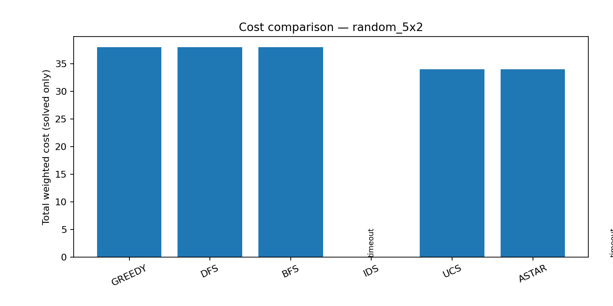
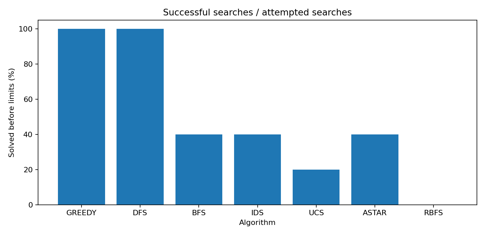
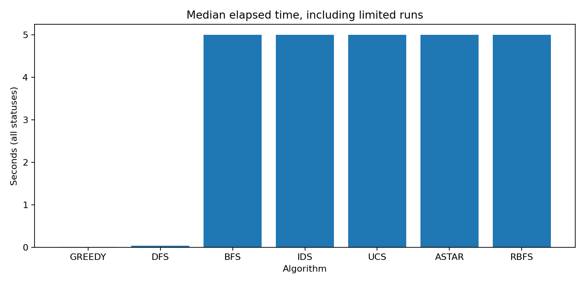
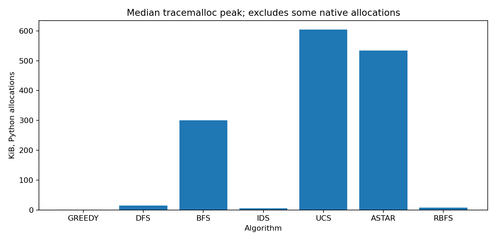
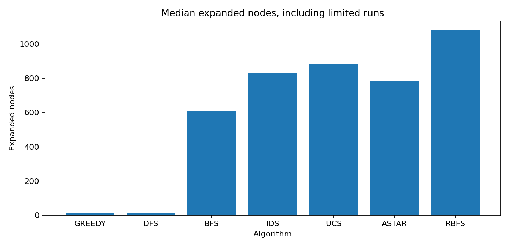
Timing includes memory tracing. Peak Python memory excludes some native allocations. The exact reverse-Dijkstra analysis is a different experiment from a per-algorithm benchmark.
3x2: 729 initial grids; 11,242 augmented states.
Exact costs (CSV) · Summary (JSON)
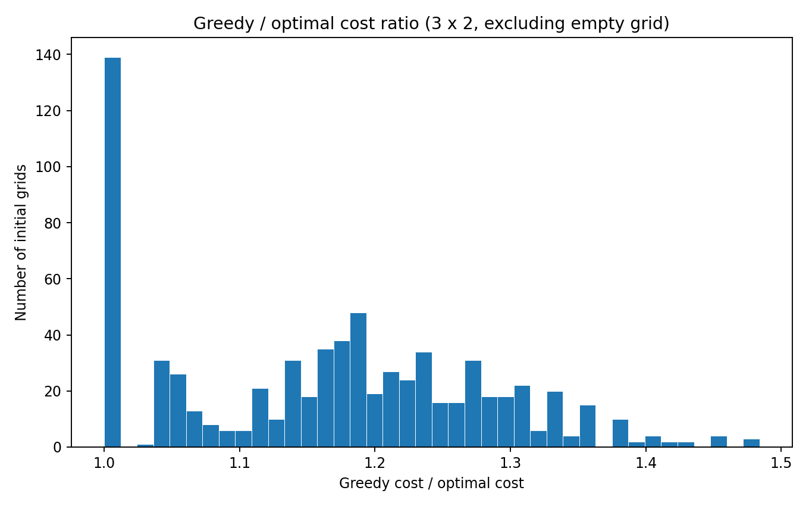
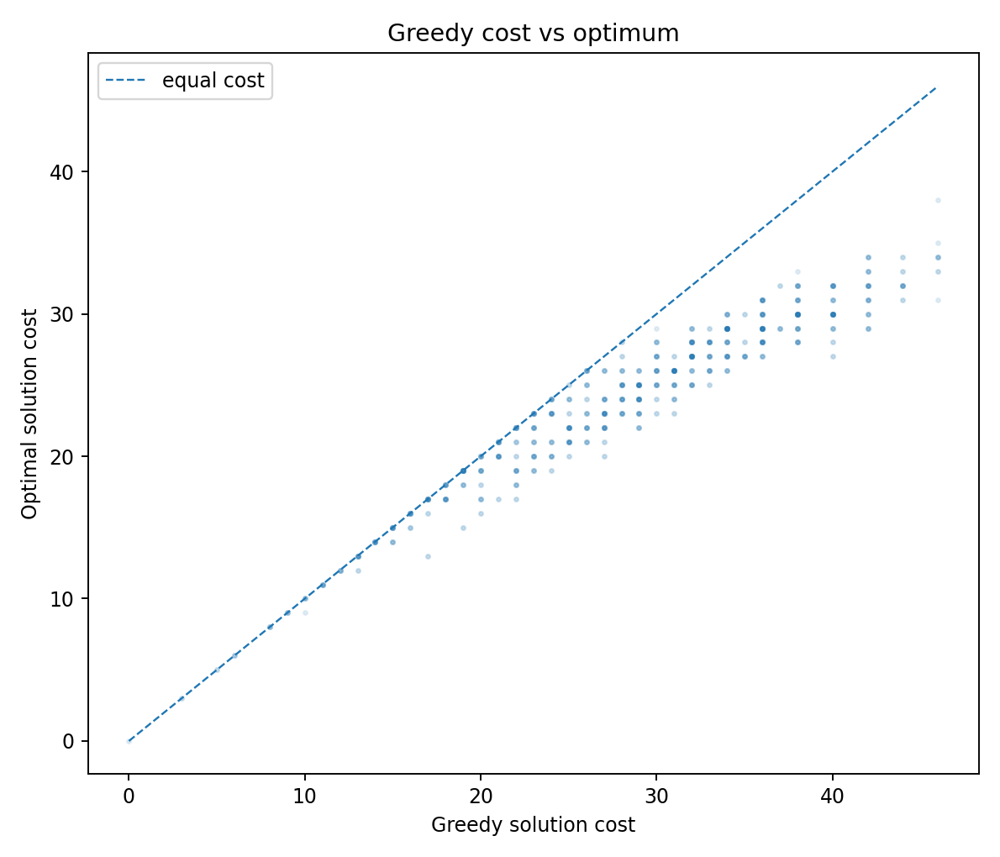
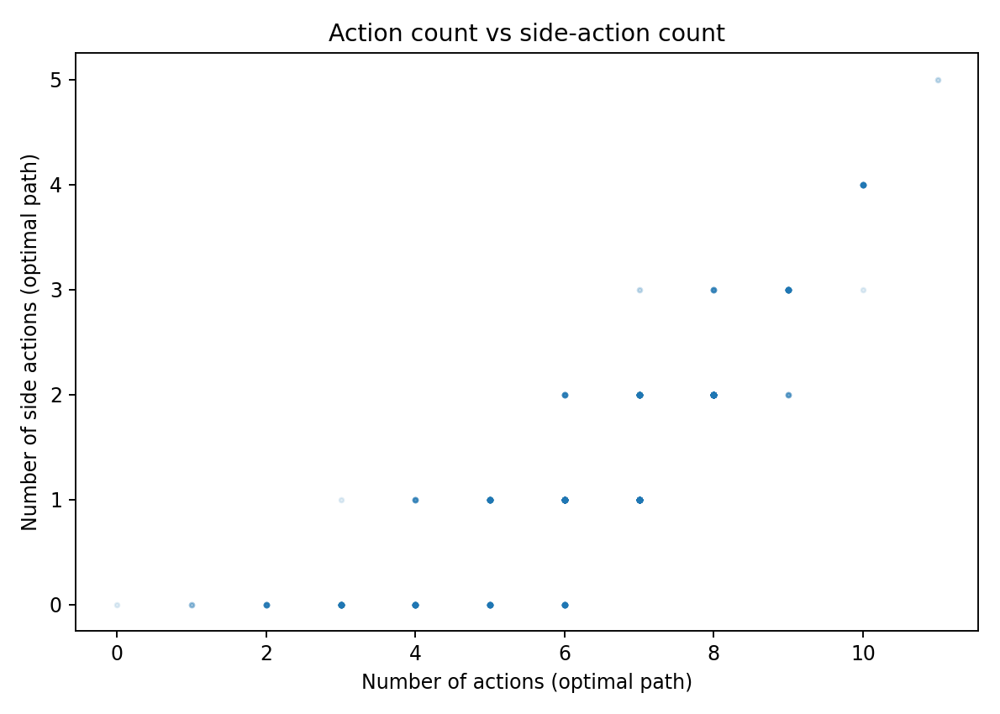
1 of 5 grids have certified UCS optima. This is not exhaustive.
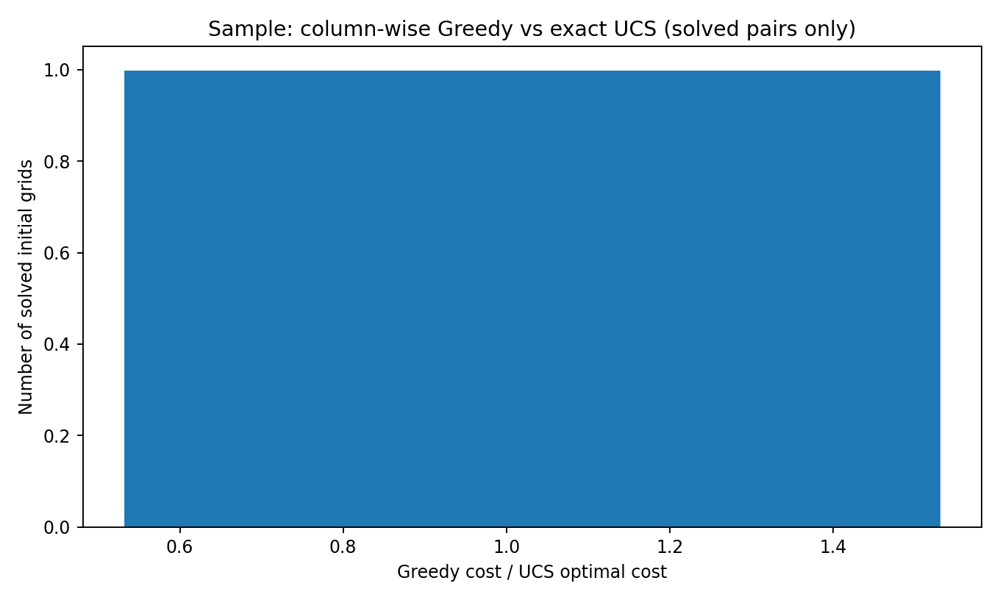
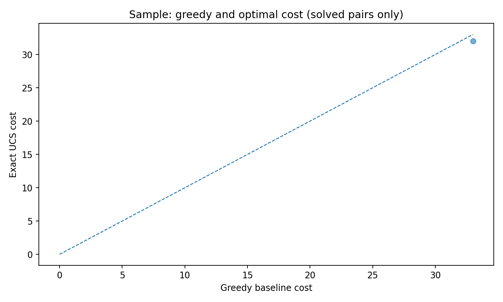